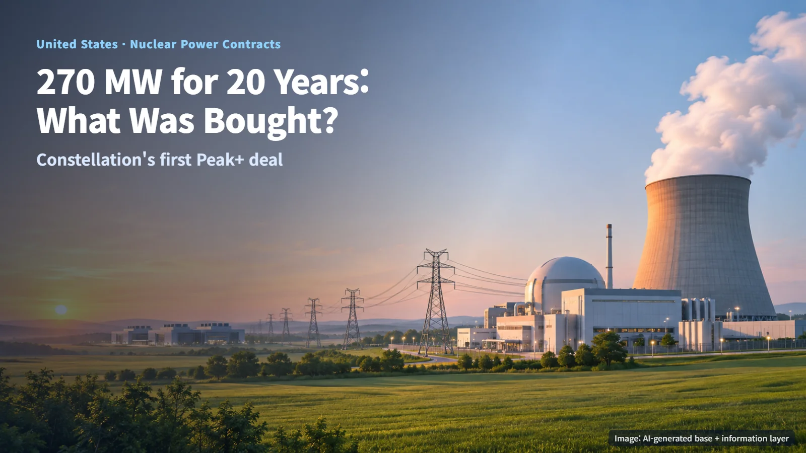
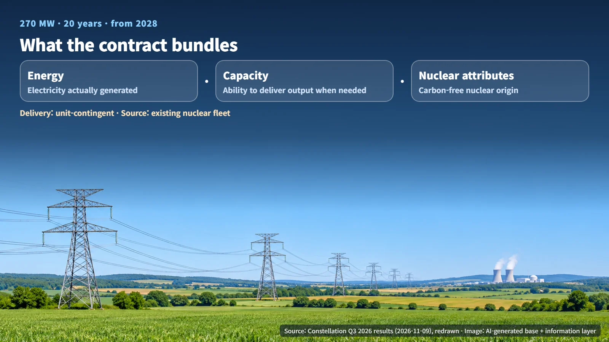
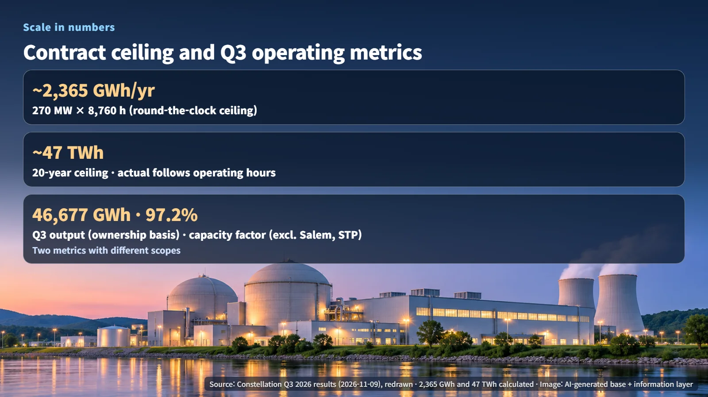

United States · Nuclear Power Contracts
270 MW for 20 Years: What Constellation's First Peak+ Contract Actually Buys
Constellation's first Peak+ deal bundles energy, capacity and nuclear attributes from its existing fleet for 20 years starting in 2028.
Whenever a nuclear operator announces a 20-year power supply deal, the same questions follow. What kind of electricity is being supplied, from where, and on what terms? On November 9, 2026, Constellation used its third-quarter results release to disclose a 270 MW contract that will supply power from nuclear plants already in operation for 20 years. Let's walk through what this deal actually trades and how large it is in practical terms.

270 MW for 20 Years: What Is Being Bought and Sold
According to Constellation, the contract covers 270 MW of energy, capacity and nuclear attributes from its existing nuclear fleet (the group of reactors the company operates), supplied over 20 years. Deliveries are scheduled to begin in 2028. The counterparty's name and the contract price were not disclosed in the release.
The deal bundles three distinct products. Energy is the electricity itself: the power that is actually generated and flows onto the grid. Capacity is payment for the ability to deliver a set level of output when it is needed. Think of it like a restaurant reservation deposit, paid separately from the meal, that holds your table. Nuclear attributes are the environmental credentials showing that the electricity came from carbon-free nuclear generation; buyers rely on them when they report where their power comes from.
Put together, the contract locks in energy, supply capability and a carbon-free origin as a single package for two decades. In effect, the buyer is securing a carbon-free power source today for the 20 years that begin in 2028.

Unit-Contingent Supply and Peak+: How the Power Is Delivered
Under the contract, power is delivered on a unit-contingent basis. In this structure, the seller passes along the output of specific generating units while those units are running; when a unit is offline for maintenance or a fault, the delivered volume falls by the same amount. Because the source is defined as Constellation's existing nuclear fleet, the amount of electricity the buyer receives is tied directly to how steadily those plants operate.
This is also the first contract under the company's Peak+ product. Constellation describes Peak+ as an approach that combines new capacity, including new generating facilities and demand response (where customers cut their usage during periods of peak demand and are paid for doing so), with energy products tailored to individual customers. The first contract draws on existing nuclear plants, and how new capacity will be combined into the offering is something to look for as the supply terms are disclosed.
The upshot: the quality of this contract rests on how many hours the existing reactors keep running, more than on any new construction timeline.
Contract Scale and Third-Quarter Operating Figures in Numbers
The 270 MW figure is an amount of power, an instantaneous rate of output. To get an amount of energy, you multiply power by time. If 270 MW were delivered around the clock for a full year, that is 270 MW × 8,760 hours, which works out to about 2,365 GWh per year. Over 20 years, 270 MW × 8,760 hours × 20 years works out to about 47,300 GWh, or roughly 47 TWh. These figures are an upper bound that assumes the units never stop; under the unit-contingent structure, actual deliveries are set by how many hours the reactors operate.

The same release reported third-quarter nuclear generation of 46,677 GWh on an ownership-equivalent basis. Ownership-equivalent means that for plants co-owned with other companies, Constellation counts only the share of output that matches its ownership stake. The capacity factor (actual output as a share of what the plants would produce running at full power without interruption) was 97.2%, calculated for the fleet excluding Salem and South Texas Project.
The two numbers cover different scopes. Generation shows production attributable to the company's ownership share, while the capacity factor shows the operating performance of the fleet minus those two plants. A 97.2% capacity factor means that fleet ran almost without pause through the third quarter, and in a unit-contingent contract, operating performance of this kind is the metric that drives actual delivered volumes.
What to Watch Next
The release also restated the uprate plans for existing reactors tied to the Amazon agreement in September and the Google collaboration in October. An uprate is an investment that improves equipment at an operating plant to raise its output, the same thread we followed in our October 29 post on Constellation's uprate loan. Where the Peak+ contract sells power from existing reactors, an uprate plan increases those reactors' output itself. The two are different kinds of news, and the uprate plans in this release repeat previously announced information.
Three things are worth following from here. First, the Peak+ supply terms, how new capacity will be secured, and whether the customer will be named. Second, which stage each existing uprate project has reached: review, construction or start of operation. Third, how the uprate schedules and the actual availability of the units will connect to contract performance once deliveries begin in 2028.
Long-term nuclear contracts highlight the value of plants that are already running, just as much as news of new construction does. The basis of a deal like this is a facility that can deliver electricity steadily for 20 years. The next time you see a similar announcement, start by asking what is being supplied, from where, and on what terms, and the substance of the deal comes into much sharper focus.